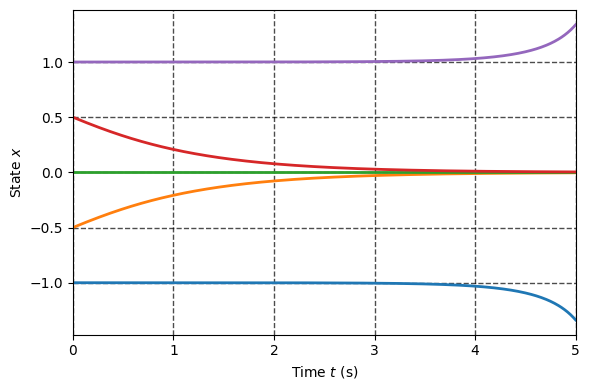
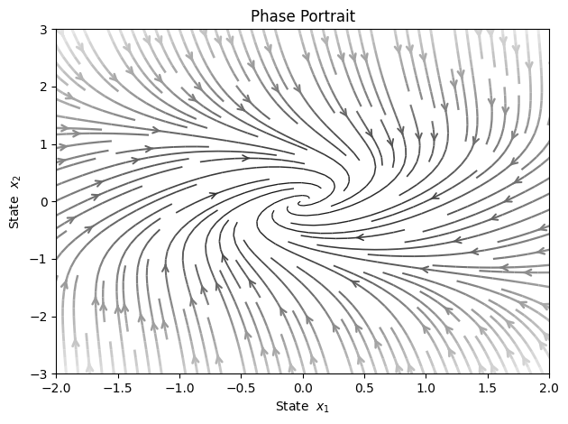

Fundamentals of Robot Control:
Lecture 5: Stability of Nonlinear Systems and Fundamentals of Lyapunov Theory
Introduction
Perhaps the most useful and general approach for studying the stability of nonlinear
control systems is the theory introduced in the late 19th century by the Russian mathematician Aleksandr Mikhailovich Lyapunov.

Lyapunov's work, "The General Problem of Motion Stability" was published in 1892 and includes two methods for stability analysis:
- Linearization method
- Direct method
The linearization method draws conclusions about a nonlinear system's local stability around an equilibrium point from the stability properties of its linear approximation.
The direct method which we will study today is not restricted to local motion: and determines the stability
properties of a nonlinear system by constructing a scalar "energy-like" function for the system and examining the function's time variation.
from utils import simulate, phase_portrait
Local stability and Linearization
In the previous class we have studied the stability nearby equlibrium of nonlinear systems in form:
Which we approximate by the linear system:
Then we conclude the stability of the original nonlinear system by expecting eigenvalues of
However there are several issues with this approach, which we will demonstrate by the following examples.
We begin with simple system:
It is obvious that this system has equlibrium and linearization nearby this equlibrium is Lyapunov stable, however as one can ensure either graphically or just by simulation, this system is stable:
def f(x,t): return -x**3 x_sol = simulate(f, [-1.8, -0.5, 0, 0.5, 1.5], tf=20, show_plot=True)

Consider now the familiar system:
If one would check the stability of equlibrium the resulting linearizate system will be strictly stable.
Let us simulate the response from different initial conditions:
def f(x,t): return -x+x**3 x_sol = simulate(f, [-1.00001, -0.5, 0, 0.5, 1.00001], tf=5, show_plot=True)

Local and Global Stability
If stability is holds just for some set of states, we call such stability to be local and region is domain of attraction.
If asymptotic (or exponential) stability holds for any initial states, the equilibrium point is said to be asymptotically (or exponentially) stable in the large. It is also called globally asymptotically (or exponentially) stable.
Lyapunov's Direct Method
The basic philosophy of Lyapunov's direct method is the mathematical extension of a
fundamental physical observation: if the total energy of a mechanical (or electrical)
system is continuously dissipated, then the system, whether linear or nonlinear, must
eventually settle down to an equilibrium point. Thus, we may conclude the stability of
a system by examining the variation of a single scalar function.
Specifically, let us consider the nonlinear mass-damper-spring system:
Assume that the mass is pulled away from the
natural length of the spring by a large distance, and then released.
Will the resulting motion be stable? A physical intuition said that it should be.
Let us draw the phase portrait:
m, b, k0, k1 = 1, 1, 1, 1 def f(x,t): y = x[0] dy = x[1] ddy = -(b*abs(dy)*dy + k0*y + k1*y**3)/m return dy, ddy phase_portrait(f, x_range=[4, 4], density=1.5)

However if one will find the Jacobian:
from sympy import Matrix, symbols, solve from sympy.utilities.lambdify import lambdify x = symbols(r'y \dot{y}', real = True) f_sym = Matrix([f(x, 0)]).T equlibriums = solve(f_sym, x) print(f'Equilibria are:\n{equlibriums}\n') jacobian = f_sym.jacobian(x) print(f'Jacobian is:') jacobian
Equilibria are: [(0, 0)] Jacobian is:
from numpy import array, real from numpy.linalg import eig jacobian_num = lambdify([x], jacobian) for equlibrium in equlibriums: x_e = array(equlibrium, dtype='double') A = array(jacobian_num(x_e), dtype='double') print(f'The real part of poles for equlibrium {x_e} are: \n {real(eig(A)[0])} ')
The real part of poles for equlibrium [0. 0.] are: [ 0. -0.]
Evaluation of the Jacobian around trivial equilibrium yields marginal stability of linearized system, thus we can't say anything on nonlinear system.
Energy as Stability Criterion
Let us consider the mechanical energy of the system above:
Comparing the definitions of stability and mechanical energy, one can easily see some
relations between the mechanical energy and the stability concepts described earlier:
- zero energy corresponds to the equilibrium point ()
- asymptotic stability implies the convergence of mechanical energy to zero
- instability is related to the growth of mechanical energy
These relations indicate that the value of a scalar quantity, the mechanical energy,
indirectly reflects the magnitude of the state vector.
The rate of energy during the system's motion is obtained easily by
differentiating:
this implies the energy of the system, starting from some initial value,
is continuously dissipated by the damper until the mass settles down, i.e. .
Physically, it is easy to see that the mass must finally settle down at the natural length
of the spring, because it is subjected to a non-zero spring force at any position other
than the natural length.
The direct method of Lyapunov is based on a generalization of the concepts in
the above mass-spring-damper system to more complex systems. Faced with a set of
nonlinear differential equations, the basic procedure of Lyapunov's direct method is to
generate a scalar "energy-like" function for the dynamical system, and examine the time
variation of that scalar function. In this way, conclusions may be drawn on the
stability of the set of differential equations without using the difficult stability
definitions or requiring explicit knowledge of solutions
Positive Definite Functions
To begin with we will admit the two notable properties of the energy function above:
- Strictly positive unless both state variables are zero.
- Monotonically decreasing when the variables vary along system trajectories
In Lyapunov's direct method, the first property is formalized by the notion of positive definite functions (PD), and the second is formalized by the so-called Lyapunov functions.
A scalar continuous function is said to be locally positive definite (LPD) in ball if:
If above property holds then is said to be globally positive definite (GPD)
The above definition implies that the function V has a unique minimum at the origin.
For instance:
- The is locally positive definite
- While is globally positive definite
Negative and Semi-Definiteness
A few related concepts can be defined similarly, in a local or global sense, i.e., a
function is negative definite if — is positive definite; is positive
semi-definite if and for is negative semi-definite if - is positive semi-definite.
The prefix "semi" is used to reflect the possibility of being equal to zero eventhough is not.
Local Stability via Direct Method
If, in a ball , there exists a scalar function
with continuous first partial derivatives such that:
- is positive definite (locally in )
- is negative semi-definite (locally in )
then the equilibrium point is stable. If, actually, the derivative is locally
negative definite in , then the stability is asymptotic.
Let us study the stability of the nonlinear system:
with following Lyapunov candidate:
from sympy import simplify x = symbols('x_1, x_2') V_symb = x[0]**2 + x[1]**2 print(f'Lyapunov candidate:') V_symb
Lyapunov candidate:
One may use a chain rule in order to find as follows:
grad_V = Matrix([V_symb]).jacobian(x) print(f'Gradient of Lyapunov candidate:') grad_V
Gradient of Lyapunov candidate:
f_symb = Matrix([x[0]*(x[0]**2 + x[1]**2 - 2) - 4*x[0]*x[1]**2, 4*x[0]**2 *x[1] +x[1]*(x[0]**2 + x[1]**2 - 2),]) dV = simplify(grad_V*f_symb) print(f'Time derivative of Lyapunov candidate:') dV[0]
Time derivative of Lyapunov candidate:
The derivative above is locally N.D in the ball
# Create a numerical function from symbolic one f_num = lambdify([x], f_symb) def f(x, t): dx = f_num(x)[:,0] return dx phase_portrait(f, x_range=[3, 2], density=1.5)

Global Stability via Direct Method
Assume that there exists a scalar function with continuous first order derivatives such that:
- is positive definite
- is negative definite
- as
then the equilibrium at the origin is globally asymptotically stable
Consider the following system:
with following Lyapunov candidate:
from sympy import simplify x = symbols('x_1, x_2') V_symb = x[0]**2 + x[1]**2 print(f'Lyapunov candidate:') V_symb
Lyapunov candidate:
grad_V = Matrix([V_symb]).jacobian(x) print(f'Gradient of Lyapunov candidate:') grad_V
Gradient of Lyapunov candidate:
f_symb = Matrix([-x[0] + x[1], -x[0] - x[1]**3]) dV = simplify(grad_V*f_symb) print(f'Time derivative of Lyapunov candidate:') dV[0]
Time derivative of Lyapunov candidate:
# Create a numerical function from symbolic one f_num = lambdify([x], f_symb) def f(x, t): dx = f_num(x)[:,0] return dx x_sol = simulate(f, [[-1,-1]], tf = 10, show_plot=True)

phase_portrait(f, x_range=[2, 3], density=1.5)

Geometrical Interpretation

Lyapunov Functions for LTI systems
The direct Lyapunov method can be in fact applied to linear systems as well:
Consider the quadratic Lyapunov candidate:
with time derivative:
where is P.D.
One can conclude that the LTI system is stable if there is P.D solution of matrix equation:
As example consider the linear system:
A = array([[0, 4], [-8, -12]]) print(f'Poles of:\n {A} \nare:\n{eig(A)[0]}')
Poles of: [[ 0 4] [ -8 -12]] are: [-4. -8.]
from scipy.linalg import solve_continuous_lyapunov as lyap Q = array([[1, 0], [0, 1]]) P = lyap(A.T, -Q) print(f'The solution of Lyapunov equation is:\n{P}') print(f'\nThe eigen values are:\n{eig(P)[0]}')
The solution of Lyapunov equation is: [[0.3125 0.0625] [0.0625 0.0625]] The eigen values are: [0.32725425 0.04774575]